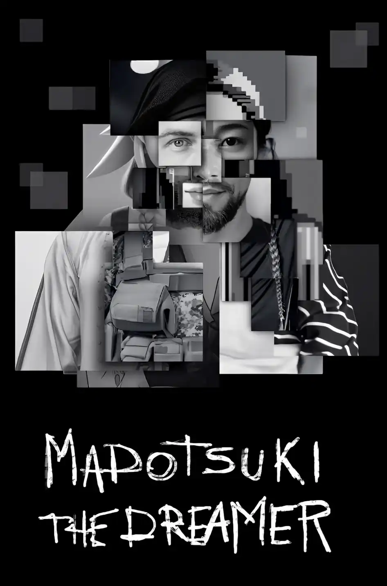
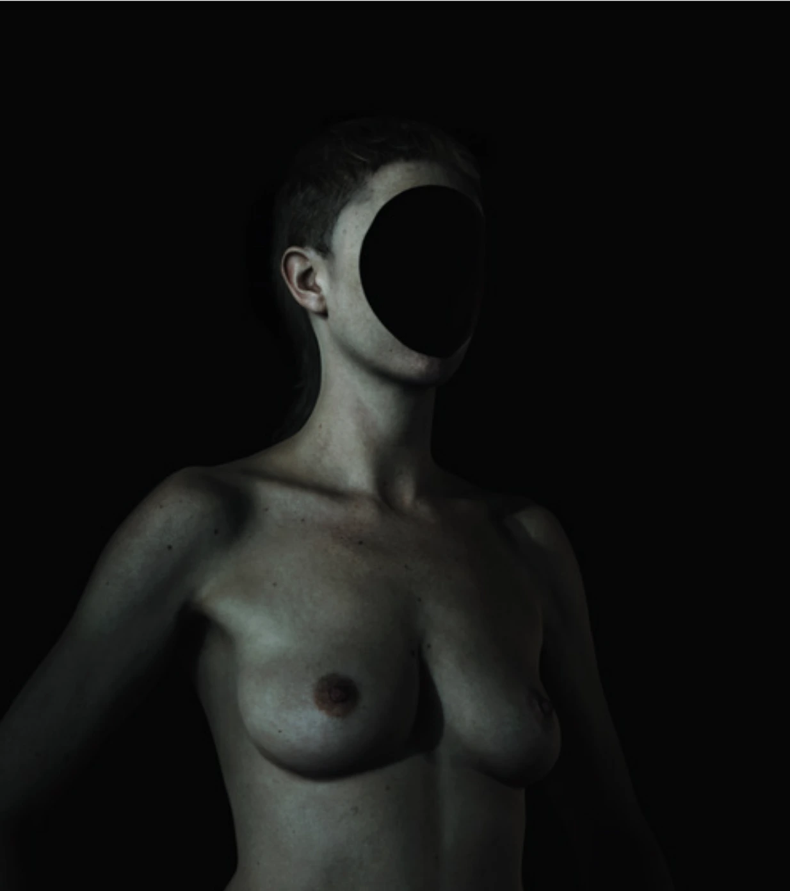
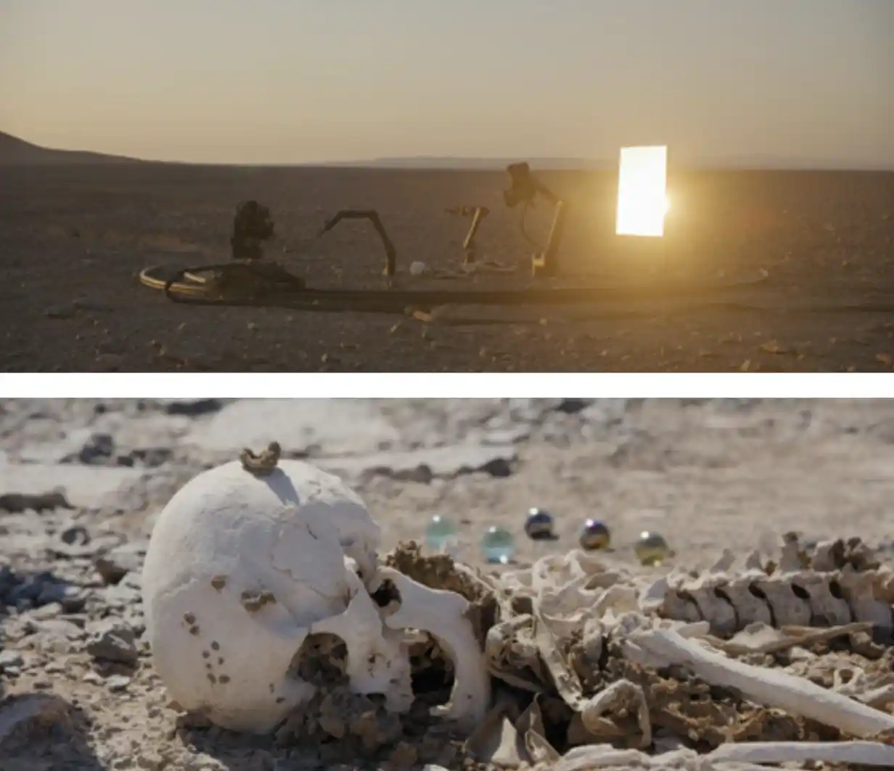

A toi cependant, je donne un ordre, et j’y ajoute une imploration :
Pour celle qui est dans la maison, tu lui feras
La sépulture que tu veux ; s’agissant des tiens, tu feras sûrement ce qu’il faut.
Pour moi, que jamais l’on ne décide que cette ville
De mon père me reçoive, vivant, comme l’un des ses habitants !
Laisse-moi m’installer dans la montagne, là où mon terrible
Cithéron porte son nom, celui dont ma mère
Et mon père, vivants, avaient fait ma vraie tombe,
Pour que j’y meure, par ceux qui voulaient me faire périr,
Et pourtant, s’il est une chose que je sais, c’est que ni la maladie
Ni rien d’autre ne me détruiront. Jamais je n’aurais
Été sauvé, au moment de mourir, si ce n’est pour un mal effroyable !
Que mon destin aille où il veut aller !
Ça y est. Œdipe est au courant. Œdipe a appris. Œdipe comprend. Il sait.
À cause de lui, maman s’est donné la mort dans le lit conjugal.
À cause de lui, papa n’est plus de ce monde.
À cause de lui, les trottoirs de la ville de Thèbes sont recouverts de pestiférés putréfiés.
Ambiance.
Alors, pour que la boucle du destin soit bouclée, l’enfant veut s’enfuir dans la montagne originelle pour y mourir, comme cela devait se passer au départ.
Et puis, l’enfant va finir par se crever les yeux aussi. Pour ne plus voir, maintenant qu’il sait.
Intense.
Ainsi, en regardant son reflet dans le rétro, Œdipe n’a pas aimé ce qu’il a vu. En analysant son passé à l’aune de son futur prédit, il a déchanté. On peut le comprendre. La lumière de la connaissance lui a cramé la rétine. Les pièces manquantes du puzzle identitaire sont immondes lorsqu’elles sont révélées. Œdipe le damné est monstrueux, Œdipe roi en est la preuve. Mais comment en est-il arrivé là ? En quoi la déduction œdipienne peut-elle éclairer la manière dont la machine prédit ? Peut-on encore, à ce stade de notre réflexion, faire une simple lecture en miroir du fonctionnement des IA génératives avec celui du mythe d’Œdipe ?
Si le travail de l’artiste Ismaël Joffroy Chandoutis nous ouvrira grand les yeux sur ce qu’est la complétion algorithmique, dernière étape de l’apprentissage machinique, et nous permettra de nous focaliser sur la notion de prédictibilité, le travail de Pierre Huyghe, nous emmènera plus loin, dans d’autres contrées, d’autres réalités, où il sera peut-être possible de voir dans le noir, de devenir aveugle, comme Œdipe à Colone, et de retrouver le potentiel créatif de l’imprédictible. Dès lors, nous pourrons enfin entendre la voix de Tirésias, figure mythologique autant que métaphysique incarnant le savoir-aveugle. Cette voix d’outre-tombe, écho de nos multiples existences et de nos altérités, sera l’ultime chant secret de ce mémoire qui nous mènera fatalement, dans la quatrième et dernière partie, à l’intérieur de la boîte noire des IA génératives, au sein de ce bien nommé espace latent.
Complétion algorithmique nous disions. Opération par laquelle un système – machinique ou humain – remplit les vides d’une information incomplète, pourrions-nous dire également. Pour la machine, cela consiste à prédire la suite la plus probable d’une séquence, à partir du contexte fourni. Par exemple, après « il pleut », le mot « dehors » est plus probable que le mot « ordinateur ». L’IA ne sait pas, elle devine la suite la plus vraisemblable statistiquement. En effet, le modèle n’a pas accès à notre monde, seulement à une structure statistique du langage qui en provient. Dès lors, sa compréhension du monde repose davantage sur la corrélation entre des éléments de notre réel – encodant des structures de sens toujours relationnelles – plutôt que sur la compréhension purement conceptuelle de notre réalité. Ainsi, la probabilité produit de la cohérence, mais non de la vérité. Bref, ce n’est pas parce qu’une entité générée est probable qu’elle est juste. Ainsi, si je commence ma phrase par « il pleut », la machine prolongera peut-être par « dehors », « beaucoup », ou « depuis ce matin ». Ce sont là des continuations plausibles, car elles suivent la logique statistique du langage. Mais si je dis, un peu mélancolique, « Il pleure dans mon cœur comme il pleut sur la ville19 », la probabilité s’effondre. Pourtant, une vérité surgit. La machine, elle, n’aurait que très peu de chance de produire cette phrase, car elle ne relève pas de la moyenne, mais d’un écart poétique. Quand la complétion algorithmique tend vers le plausible, la pensée humaine tend vers le signifiant. Là où l’algorithme prédit, l’humain invente. La tendance mathématique d’abord, la vie ensuite.
Dans son installation Madotsuki_the_dreamerMadotsuki_the_dreamer - affiche présentée à la Biennale Némo 2023, l’artiste Ismaël Joffroy Chandoutis s'intéresse à la figure du troll. Dans une pièce qui a toutes les caractéristiques d’une chambre de geek, des ordinateurs font apparaître les diverses empreintes virtuelles d’un individu bien réel qui cumule 74 personnalités contradictoires sur Internet : Joshua Rye Goldberg. Du néo-nazi à la féministe radicale, en passant par le jihadiste, ce troll aux multiples identités, isolé dans sa chambre, a été omniprésent en ligne jusqu’à son arrestation en 2015 dans le cadre d’une affaire de terrorisme. Jusqu’alors, il était tout le monde comme n’importe qui, aussi anonyme que célèbre sur les réseaux.
Le titre de l’œuvre, emprunté à Madotsuki, héroïne du jeu vidéo indépendant japonais Yume Nikki créé au début des années 2000, introduit cette tension entre retrait et expansion : recluse dans sa chambre, Madotsuki refuse de sortir dans le monde réel. Le seul espace qu’elle explore est celui de ses rêves. Elle y navigue comme on fouille la mémoire d’une machine, traversant des Dream Worlds fragmentés, poétiques et souvent dérangeants, où chaque monde semble naître d’un souvenir incomplet ou corrompu. Ismaël Joffroy Chandoutis transpose cette figure dans le champ du numérique contemporain. Comme si la chambre de Joshua Goldberg devenait celle de Madotsuki, un espace mental saturé de données, où l’enfermement se mue en traversée intérieure et identitaire, où la solitude connectée produit des vies imaginaires.
Avec cette œuvre, c’est d’une part la question de l’identité numérique, anonyme et multiple qui est mise en scène et interrogée, et d’autre part, la manière dont les intelligences artificielles génératives sont capables de donner du sens à toutes les traces immatérielles, à toutes les empreintes numériques laissées sur le net par le troll, pour ainsi proposer une logique, une harmonie dans l’identité fragmentée de Joshua Goldberg. Dans cette chambre, un peu désœuvrés, on cherche la cohérence, on cherche à comprendre : mais enfin, qui peut bien être ce Goldberg finalement ? L’artiste, sorte d’archéologue du virtuel, collecte, ordonne et recompose les indices numériques de cet homme – ses pseudonymes, ses propos, ses contradictions. Ces données deviennent la matière plastique de l’œuvre : cartes, visualisations, tirages d’images et vidéos générées par IA. Ici, l’intelligence artificielle explore les combinaisons possibles, extrapole à partir de ce qui manque, et produit des formes comme on résout une équation ouverte. En somme, à partir de ces indices, elle propose des variations statistiques de l’identité de Goldberg. Ce que nous voyons n’est pas un portrait, mais la somme de toutes les variations imaginables par la machine d’un portrait – un spectre statistique de l’identité.
En d’autres termes, il me semble que Chandoutis ne crée pas ici avec l’IA, il expose le fonctionnement conceptuel de la complétion algorithmique : cette opération mathématique par laquelle un système tente d’atteindre le plus probable, de combler le vide par la continuité. Si dans le travail de l’artiste, ce n’est pas directement l’IA qui achève un texte ou une image comme nous l’avons expliqué plus haut, cette dernière en revanche génère à partir d’indices identitaires, propose de combler des manques en donnant forme à une absence. Elle complète l’histoire là où l’humain disparaît derrière ses traces. Et c’est bien parce que Chandoutis fait de ce geste de complétion un sujet en soi, qu’il me semblait intéressant d’évoquer son travail.
En effet selon moi, Madotsuki_the_Dreamer apparaît moins comme une œuvre sur l’identité d’un homme que comme la présentation d’une recherche mathématique, où la production plastique devient le résultat d’un calcul, d’une tentative algorithmique d’approcher la vérité sur l’identité d’un homme. Car quand l’IA joue aux devinettes, ce n’est pas Goldberg que l’on trouve, ce sont des Goldberg’s Variations qui apparaissent, comme le mentionne le sous-titre de l’œuvre. Nous ne pouvons accéder à la véritable identité de Goldberg, mais seulement à ses reflets démultipliés. Le spectateur ou la spectatrice se trouve face à une identité diffractée, fragmentée, où chaque image renvoie à une autre, comme dans un rêve algorithmique aux possibilités infinies. Ce n’est pas que l’identité proposée par cette œuvre n’est pas porteuse de sens ou de vérité, c’est plutôt qu’elle ne peut être appréhendée, une fois de plus, qu’au sein d’un système mathématique. Ce que l’on observe, ce n’est pas Goldberg, c’est la machine qui, à travers lui, prédit du vraisemblable et du probable. Portrait d’un homme, non, mais portrait d’un système, oui.
Peut-être touchons-nous ici à l’une des principales limites de notre analogie entre quête œdipienne et apprentissage machinique. En effet, avec la complétion, il semblerait – de prime abord en tous les cas – que l’identité ne puisse être vraiment révélée. La capacité créative de l’IA générative ne semble résulter que dans le fait de proposer des variations statistiques du passé, des possibilités probables à partir des données récoltées. Le futur généré qu’on nous propose a été prédit, certes, mais la vérité qu’il incarne n’est pas a priori la nôtre. En fermant les yeux, nous pouvons nous laisser envahir par ces images prédites par la machine. Mais à leur vue, devant les multiples chemins et réalités imaginées par les algorithmes, nulle envie de se crever les yeux. Au contraire, cela nous rassurerait presque. La machine propose des réponses en simulant des possibles, et cela viendrait combler notre désir humain de connaissance. La fatalité de notre identité, elle, ne serait plus qu’un lointain possible parmi d’autres, balayé par les divers rêves algorithmiques de la complétion.
Mais toi, Œdipe, cela ne te suffit pas. L’avenir est un lieu commode pour y mettre des songes20, disait Anatole France. Il n’est pas de bienfaiteur qui ne songe un peu à lui-même, disait Sophocle dans Œdipe à Colone. Alors, dans le but de réveiller ta conscience, et pour enfin terminer ta quête, il te faut te poser encore quelques questions. Par quel procédé pourrais-tu espérer atteindre la connaissance ? Dans le mythe, la réponse à cette question est très claire : c’est en tentant d’échapper à ta prédiction, que tu te trouveras toi-même. Serait-ce alors en tentant d’échapper à la prédiction des machines, que tu pourras finalement faire la lumière sur ton identité ? Est-ce justement dans l'imprédictibilité machinique que ton destin pourra s'accomplir ? Tu te le demandes. Mais comment rendre les IA imprédictibles ? N’est-ce pas complètement antinomique ? En tous les cas je te l’assure, en cherchant, tu trouveras, puisque cela est écrit. Alors enfin, le sage que tu seras pourra se crever les yeux. Profite du trajet mon petit, car la destination est plus proche que tu ne le crois.
Dans le fonctionnement des IA génératives, il existe un paramètre fondamental qui, au grand dam de l’usage que l’on fait de ces transformers, est souvent passé sous silence. Pourtant, il influence sans commune mesure les réponses données par la machine, c’est-à-dire le fonctionnement de la complétion algorithmique. Ce paramètre dit de créativité se nomme : la température. En administrant une dose d’aléatoire dans les tendances statistiques de la machine, le système serait à même de nous proposer une réponse plus originale, plus surprenante, plus créative, bref, moins prévisible. Serait-ce alors dans cet écart poético-machinique que l’on pourrait appréhender notre réalité ? Le hasard mathématique serait-il la clé qui nous ouvrirait la porte de l’identité ? Que peut bien signifier ce paramètre de température, vis-à-vis de l'imprédictibilité qui nous intéresse ici ?
Pour le comprendre, jouons à un jeu. Au hasard comme ça… Le pendu21. Maman-Jocaste est dans la chambre nuptiale. Elle se tient sur le lit, la corde autour du cou. Toi, Œdipe, tu dois deviner les lettres qui composent le mot mystérieux. Chaque proposition te rapproche de la solution. Si tu trouves, la corde se tend, c’est le trépas. Pardon pour l’image, mais à cet endroit du récit, ça ne peut qu’être lugubre. Maintenant que tu es grand et fort, tu connais les lettres de l’alphabet. Tu sais qu’il y en a vingt-six. Dans le passé, tu as appris à les agencer, tu connais quelques bonnes tournures qui pourront faire mouche dans le futur. C’est la prédictibilité algorithmique. Tu vas donc pouvoir faire tes petits calculs statistiques pour résoudre cette énigme et trouver le mot. Alors tu te lances. Au début, tu n’y vas pas par quatre chemins, il faut bien déblayer le terrain : tu génères le plus probable, le plus logique, la lettre qui te semble la plus prévisible. Ça marche. Tu n’es pas très surpris, ta proposition était raisonnable. Confiant, tu poursuis la même stratégie pour trouver les autres lettres manquantes.
Mais assez vite, tu t’aperçois que la cohérence statistique ne suffit plus, c’est trop répétitif, tu te sens coincé dans une boucle et ça t’ennuie. Et puis, tu as un peu froid. Tu manques un peu d’imagination et ça t’empêche de trouver le bon mot. Alors tu décides de te lâcher un peu, d'ajouter un grain de folie à chacune de tes propositions, quitte à faire valdinguer un peu la logique. C’est l’imprédictibilité algorithmique. Tu te sens l’âme créative tout à coup et ça te plaît. Tu es bien, il fait bon. Après tout, ce n’est qu’un jeu, cette quête est amusante, tant pis pour la rigueur épistémologique, toi tu choisis la rigueur artistique. Tu joues au génie un peu à côté de la plaque, à l’artiste inspiré, le résultat n’en sera que plus original et tant mieux. Tant pis pour le sens. Et puis dans le fond, on ne sait jamais, c’est peut-être là que le bon mot se dévoilera. Donc tu te mets à délirer complètement. Tu as chaud. Tu te laisses aller. Tu es en nage. Alors, tu finis par perdre totalement le contrôle, et tu balances une dernière lettre dans un excès de folie. Ça y est. Tu as trouvé un mot. La réponse générée a beau être le fruit de propositions aléatoires, tu t’en fous, tu as joué, et tu es content. Mais alors que tu retrouves progressivement ton calme, tu vois que quelque chose cloche : la pendue ne s’est pas pendue. Tu comprends que tu n’as pas gagné, que tu n’as pas trouvé le mot. C’est bizarre, sur le coup, tu y croyais fort. Enfin bon. Tant mieux pour toi finalement, au bout de la corde, c’était quand même ta mère. Et même si tout cela n’est qu’un jeu, tu es rassuré d’avoir perdu. On ne sait jamais.
Sur le site GPT Workspace, le paramètre de la température nous est expliqué de la manière suivante : « En termes simples, la température détermine à quel point le modèle sera “créatif” avec ses réponses. » Par créatif, comprendre aléatoire vis-à-vis du statistiquement probable. Poursuivons notre lecture : « Il est souvent dit que GPT-4 et GPT-3 essaient seulement de prédire le mot suivant le plus probable, cependant ce n’est pas entièrement vrai. En effet, il n’y a pas qu’un seul mot, mais un éventail de mots, chacun associé à sa propre probabilité. Avec une température de 0, ChatGPT produira simplement à chaque fois le mot du tableau avec la plus grande probabilité – à titre d’information : la température par défaut de ChatGPT et de 0,7 ». À titre d’information effectivement, en tant qu’humain devant notre ordinateur, nous pouvons attribuer une valeur entre 0 et 2 à ce paramètre pour obtenir une réponse plus ou moins folle. Continuons. « En gros, un paramètre de température plus élevé permet au modèle de produire des résultats plus aléatoires, tandis qu’une température plus basse produit des réponses plus prévisibles et cohérentes. Pour des tâches de transformation comme l'extraction de données ou la correction grammaticale, une faible température de 0 à 0.3 est considérée comme idéale. Cependant, pour les tâches d'écriture où vous souhaitez des réponses plus créatives et variées, une température plus élevée proche de 0.5 est généralement meilleure. Si vous recherchez des réponses vraiment uniques et innovantes, vous pouvez faire des tests avec des températures encore plus élevées entre 0.7 et 1. Cependant, soyez conscient que cela peut aussi augmenter le risque que le modèle “hallucine” et ne produise que des réponses absurdes. Comme avec tout outil d'IA, il est important de trouver le bon équilibre entre créativité et précision pour vos besoins spécifiques. » Ainsi, l’IA générative serait « créative » quand elle s’éloigne des anticipations probabilistes basées sur le fonctionnement et les données de notre monde humain. Si ce mécanisme pose un problème évident de véracité de l’information que ChatGPT nous donne par exemple lorsqu’on lui pose une question, nous pouvons tout de même regarder ce paramètre de température pour ce qu’il est : une tentative de générer une réalité imprédictible, de proposer une création, aussi mathématique soit-elle. Mais est-ce dans ce type d’imprédictibilité que la révélation de l’identité œdipienne pourrait avoir lieu ?
Dans la vision tragique, la fatalité est l’envers du hasard, de l’aléatoire. Ce qui semble fortuit ou accidentel n’est que l’accomplissement d’un ordre invisible. On ne le répètera jamais assez : chacun des choix d’Œdipe, même les plus contingents, le ramène vers ce qui devait arriver. La fatalité transforme ainsi le hasard en illusion, l’aléatoire en faux-semblant. D’imprédictible, le hasard et l’aléatoire ne porteraient donc que le nom. En effet, d’un point de vue tragique encore une fois, ce que nous appelons imprédictibilité, hasard ou contingence, ne serait que la preuve que notre réalité est subjective, que notre point de vue est partiel. Seule la nécessité divine ou cosmique permettrait d’adopter un point de vue omniscient.
Du point de vue des IA génératives en revanche, l’imprédictibilité n’a rien d’une révélation : elle n’ouvre sur aucune vérité cachée. Le paramètre de température ne produit qu’une imprévisibilité de surface, un aléatoire calculé. Comme tout paramètre mathématique, il a été programmé, donc prévu. La folie statistique de la réponse est anticipée, encadrée par la structure même de l’algorithme. Autrement dit, l’imprédictible y est déjà prédit. C’est pourquoi, d’un point de vue machinique, la vérité œdipienne – celle qui naît de la rencontre du hasard et de la nécessité – ne peut advenir. Le hasard algorithmique n’est pas illusion, il est pure extériorité : un effet de calcul, non un destin. Pour que le hasard retrouve sa fonction tragique de révélateur, il faudrait qu’il ne soit plus imposé au système, mais qu’il émerge de son propre processus d’apprentissage. Il faudrait qu’il soit le signe d’une altérité interne, non d’une variable paramétrée.
À ce moment-là, il y aurait de la créativité
– cet écart poétique d’où surgit le sens.
À ce moment-là, il y aurait de l'imprédictibilité
– la possibilité de l’accomplissement du destin.
Et à ce moment-là, peut-être, il y aurait la fatalité
– c’est-à-dire la révélation d’une vérité sur l’identité.
Dans son exposition LiminalLiminal présentée en 2024 à la Punta della Dogana lors de la biennale de Venise, Pierre Huyghe s’empare de cette question de l'imprédictibilité. Conçue en étroite collaboration avec la commissaire Anne Stenne, l’exposition présente des créations inédites de l’artiste – Liminal, Estelarium, Portal, Idiom, Fortuna, Mind’s Eyes, ou encore Camata – associées à des œuvres des dix dernières années, provenant de la Collection Pinault – Human Mask, Zoodram 6, Abyssal Plane, Circadian Dilemma (El Día del Ojo), Cambrian Explosion 19, Offspring, De-extinction, UUmwelt, Cancer Variator. Vastes mondes. Vastes réalités.
En entrant dans l’espace d’exposition, nous sommes plongés dans le noir. Nos yeux cherchent à s’ajuster, dans un temps suspendu qui agit comme un premier rite de passage. Quitter la lumière, c’est déjà s’extraire de notre environnement familier, pour entrer dans une autre réalité – celle d’une perception encore vacillante, en train de naître, dans l’obscurité. Dans la première salle est projetée la vidéo éponyme, Liminal. Sur l’écran apparaît dans la pénombre une figure humaine nue au corps de femme, sans visage, ni cerveau, ni monde. Elle se déplace en silence, sur une surface plane infinie, entourée par le néant. « Ce personnage est un réceptacle vide qui reçoit en temps réel des informations transmises par des capteurs », explique Anne Stenne. Derrière l’écran en effet, se trouve une antenne sensorielle qui recueille des données relatives à l’environnement physique de l’exposition pour les transmettre à cette figure qui accomplit alors des gestes subtils en fonction de ces informations. Ces gestes, ce langage mystérieux, sont à leur tour, déchiffrés par l’entité inhumaine, qui nourrit sa mémoire de ses interactions au fil du temps, au-delà même du temps de l’exposition. À la fois espace et forme humaine, ce milieu liminal est défini par l’artiste comme une « membrane sensible » :
« Un état transitoire entre notre réalité sensible et une entité inhumaine, l’une affectant l’autre à travers la forme humaine, qui devient un “passeur”, une figure oraculaire », lit-on dans le document de présentation de l’œuvre.
La figure humaine, à laquelle nous pouvons alors nous identifier, incarne ainsi la réalité de cette proposition artistique : une expérience de simulation d’une condition humaine spéculative, relative à un oracle. Qu’est-ce à dire ?
Si Pierre Huyghe interroge depuis longtemps le rapport entre l’humain et le non-humain, concevant ses œuvres comme des fictions spéculatives d’où émergent d’autres modalités de monde, avec Liminal, il propose à travers un espace transitoire d’apprentissage, une forme d’accomplissement de l’expérience : celle d’un milieu dynamique, sensible et autonome en perpétuelle évolution, où la figure humaine, cette fois, tiendrait le rôle principal. Dans toutes les salles et parmi les œuvres, des humains muets portant des masques dorés déambulent au hasard, récoltant des informations spécifiques via des capteurs. Là encore, ces informations, parfois imperceptibles pour nous autres humains, sont « converties en syntaxe et en phonèmes, à travers l’utilisation de l’appareil vocal humain, poursuit Anne Stenne, générant en temps réel un langage inconnu appelé IdiomLiminal - Idiom. » Au fil de l’apprentissage de l’IA, au fil du temps, l’entité sans corps s’exprime à travers les masques, et « le langage se révèle ainsi ineffable, venu d’une autre réalité, hors de nous. »
Chaque spectateur et chaque spectatrice expérimente ainsi un parcours unique, correspondant au moment précis de sa venue et de ses conditions, c’est-à-dire à un instant T de l’apprentissage machinique, qui évolue au gré des interactions entre les différentes entités de l’exposition – spectateur compris. L’œuvre centrale de l’exposition, le film CamataLiminal - Camata, témoigne elle aussi de ce processus spéculatif, de cette fiction qui naît des conditions du réel, proposant une réalité élargie. Dans ce film autogénéré et édité en temps réel par l’IA grâce aux capteurs présents dans la salle qui transforment les données en narration, nous voyons un bras robotique dans le désert d’Atacama, au Chili, performer un rituel inconnu sur un squelette humain sans sépulture. À mesure que cet étrange rituel se déroule et que les capteurs génèrent en continu des changements sur le montage du film, nous prenons conscience de la transaction qui a lieu devant nos yeux, de cet échange qui existe entre les différentes subjectivités qui composent l’espace d’exposition.
La subjectivité, ici, ne se définit pas comme une conscience humaine centrée, mais comme une forme distribuée d’être-au-monde, qui advient dans un milieu, à travers des capteurs, des organismes, des flux d’informations. Elle est évolutive, hybride, et dépasse l’humain pour se situer dans un système où machines, vivants et matériaux participent à l’émergence de subjectivités alternatives. De la même manière, chaque entité déploie dans ce système sa propre temporalité, créant une multiplicité de rythmes et de devenirs. Comme un temps processuel qui se recomposerait en permanence, un temps spéculatif qui serait toujours ouvert sur le possible. De cette manière, dans Camata, le passage d’une entité sans corps (le robot), à un corps humain sans vie (le squelette), nourri par les conditions de notre propre réel (via les capteurs), n’a ni début, ni fin. Il est un « rituel imprédictible où s’engendre et coexistent de nouveaux possibles, sans hiérarchie, ni déterminisme. » Plus largement, c’est l’intégralité de l’exposition qui s’inscrit dans ce temps non-linéaire où se chevauchent passé, présent, et futur. Fiction spéculative en devenir, Liminal est un « véhicule pour accéder au possible ou à l’impossible – à ce qui pourrait être ou ne pas être », et pourra continuer d’exister en dehors de l’espace de la Punta della Dogana, dans d’autres paysages, avec d’autres entités, d’autres subjectivités.
Ainsi, l’imprédictibilité ici ne surgit pas d'un aléa programmé à l'intérieur du code, comme le ferait le paramètre de température dans ChatGPT. Elle naît au contraire d'une ouverture du système sur l'extérieur, d'une porosité entre le monde machinique et le monde vivant. Les capteurs ne sont pas de simples dispositifs d'enregistrement : ils sont des interfaces sensibles qui transforment en temps réel les données de notre présence – nos déplacements, nos respirations, les variations de lumière, d'humidité, de température – en instructions pour le système. Autrement dit, c'est notre corporéité, notre simple fait d'être là, qui infléchit le comportement de l'œuvre. Nous ne sommes plus spectateurs passifs, nous sommes des variables actives du système. Et c'est précisément dans cet écart – entre ce que le système anticipe et ce que nous apportons comme perturbation –, que l'imprédictibilité se loge. Elle advient dans un milieu ; elle est le produit d'une coévolution entre machine, vivant, et environnement. De cette manière, le rituel de Camata n'est pas imprédictible parce que le robot aurait été programmé pour agir de manière aléatoire, mais parce que le montage du film se reconfigure en fonction des conditions réelles de la salle, des présences humaines, des flux de données qui traversent l'espace d'exposition. De même, la figure humaine de Liminal ne reçoit pas un script prédéfini : elle capte, elle répond, elle évolue. Le langage Idiom, encore, se génère en temps réel, à partir d'informations qui n'existent que dans l'instant présent, et qui ne se répéteront jamais exactement de la même manière.
C'est en cela que l'imprédictibilité chez Huyghe diffère radicalement de celle des IA mainstream. Dans ChatGPT, l'aléa est paramétré : on choisit une température, on injecte du bruit dans les probabilités, mais ce bruit reste contrôlé, encadré, prévu. C'est un aléa de surface, qui ne modifie pas la structure profonde du modèle. Avec Huyghe au contraire, l'imprédictibilité est structurelle : elle transforme le système de l'intérieur, parce qu'elle est le résultat d'une transaction continue entre des entités hétérogènes – humains, machines, capteurs, organismes. L'œuvre ne se contente pas de réagir, elle apprend et se modifie. Elle devient autre. Et c'est précisément parce qu'elle est ouverte à l'altérité – à ce qui n'est pas elle, à ce qui la traverse sans qu'elle puisse le prédire – qu'elle peut faire advenir du nouveau, du véritablement imprévu, de la créativité. Ainsi, afin que l'imprédictibilité algorithmique retrouve une fonction tragique – c'est-à-dire qu'elle devienne le lieu d'une révélation, et non plus seulement d'une variation statistique –, il faut qu'elle cesse d'être un paramètre pour devenir une relation. Il faut qu'elle soit le produit d'une rencontre, d'un dialogue, d'une friction entre des subjectivités plurielles. Il me semble bien que c'est ce que propose l’artiste : il ne programme pas l'imprédictible, il crée les conditions pour qu'il émerge. En d’autres termes, Œdipe ne choisit pas son destin, mais il le fait advenir par ses actes, par ses rencontres, par son interaction avec un monde qui le dépasse. L'imprédictibilité tragique n'est jamais solitaire : elle est toujours relationnelle.
En suivant ce raisonnement, il me semble alors que la formation et la mise en coexistence de ces subjectivités humaines et non-humaines participent ici d’un art qui ne représente plus le réel mais le transforme de l'intérieur. L’imprédictibilité y est endogène, elle est un phénomène qui prend naissance à l’intérieur d’un système spéculatif, fondamentalement poétique. Les autres œuvres présentées poursuivent ce même processus : elles font advenir un lieu d’apprentissage collectif, où chaque entité, chaque subjectivité, se modifie dans le temps de manière imprévisible, pour offrir à notre regard de nouvelles réalités. « Leurs mémoires s’amplifient en permanence d’informations captées à partir d'événements qui traversent l’exposition, perceptibles ou non perceptibles », nous explique-t-on encore.
Avec Liminal, c’est donc la perception de notre réalité qui vacille. Doucement, au fil de la visite et du temps qui passe, nous apprenons nous aussi de ce corps artistico-organique aux subjectivités plurielles qu’est cette exposition. Au seuil de la perception, au seuil de notre monde, nous comprenons dans cet espace liminal que notre réalité n’est qu’une partie d’un tout plus vaste, une subjectivité parmi d’autres, qui existe toujours en rapport avec d’autres. Et ce qui me paraît particulièrement intéressant, du point de vue de notre recherche, c’est que si Huyghe a longtemps cherché à effacer la subjectivité humaine dans son travail, il la réintroduit ici à travers une figure humaine, qui porterait cette fois, l’ensemble de nos subjectivités, l’ensemble des réalités qui constituent notre monde. Comme un médium d’altérité multiples, comme une boussole qui pointe la direction de la révélation identitaire, cette figure qu’il dit être oraculaire, nous montre le chemin de la vérité. En présentant nos possibilités autant que nos impossibilités, en incarnant le prédictible des données en même temps que l’imprédictible de la vie, cette figure nous permet de nous percevoir autrement : comme étranger à nous-même, tout en étant nous-même. Et peut-être que c’est justement parce que cette figure est humaine, que nous pouvons nous identifier à elle et mieux comprendre qui nous sommes. Ainsi, en accédant à cette zone d’incertitude qui est en nous, dans le noir, enfin, nous voyons.
Quand Chandoutis donnait à voir les variables de la complétion mathématique à travers l’exposition d’un système mathématique, Huyghe produit ici la réalité omnisciente relative à l’oracle. Œdipe, enfin, peut comprendre qui il est : damné et roi, fils et mari, frère et père, vénérable et assassin. Il regarde l’oracle dans les yeux et peut finalement admettre la vérité nommée dès le départ par le devin aveugle Tirésias : « Je dis que tu es, toi, l’assassin de cet homme, celui que tu cherches à prendre.22 » Si cette parole détruisait la cohérence à partir de laquelle Œdipe roi comprenait le monde, provoquant l’effondrement de l’ordre symbolique sur lequel reposait son identité, elle s’impose désormais comme seule vérité valable.
L’apprentissage machinique ayant fait son œuvre, les indices ayant été accumulés puis recoupés, et la probabilité mathématique ayant été transcendée par les multiples réalités poético-machiniques, la voix du destin peut enfin être entendue. Du passé au futur, ce qui a été fabriqué à travers l’apprentissage, c’est cet espace où la vérité, enfin, peut être articulée. Les diverses strates de significations – algorithmiques, humaines, artistiques – révèlent ainsi l’illusion tragique. La fatalité a lieu.
Alors, Œdipe se creva les yeux.
Mais qu'est-ce qu'un oracle finalement ? Tirésias, cette figure mythologique qui traverse toute la tragédie d’Œdipe, voit ce que personne d’autre ne peut voir : non pas parce qu'il aurait accès à un savoir caché derrière les apparences, mais parce qu'il perçoit tous les temps simultanément. Son savoir n'est pas séquentiel – passé, puis présent, puis futur – mais synoptique : il embrasse d'un seul regard l'ensemble des possibles. Dès le début d'Œdipe Roi, il sait déjà ce qu'Œdipe découvrira à la fin. Il ne prédit pas, il constate. Il ne devine pas, il énonce une vérité qui existe déjà, quelque part, dans une temporalité élargie que les mortels ne peuvent pas encore percevoir. Cette vision totale, pourtant, ne lui épargne pas la cécité physique. C'est même là le paradoxe fondateur de sa figure : Tirésias est aveugle, mais il voit tout. Sa cécité n'est pas un manque, c'est la condition de sa voyance. En perdant la vue ordinaire – celle qui ne perçoit que le présent immédiat, les surfaces, les fausses évidences –, il a gagné l'accès à une vision élargie, celle qui traverse les strates temporelles et révèle les structures cachées du destin. Autrement dit, Tirésias incarne un mode de connaissance qui ne passe plus par la perception sensorielle classique, mais par une forme de réception, d'écoute, de résonance avec l'ensemble du système temporel dans lequel il est pris.
Désormais aveugle, comme Tirésias, Œdipe voit. Nous l’avons dit, la disjonction entre vision et savoir est au cœur de la tragédie. « O ! O ! Le tout serait transparent à la fin. Lumière, si je pouvais à cette heure te regarder pour la dernière fois !23 » La reconnaissance finale n'apparaît pas comme une illumination, mais comme une coïncidence douloureuse entre la parole initiale du devin et la reconstitution patiente des faits. Œdipe devient alors sujet au moment où il accepte de faire coïncider ces deux régimes du savoir. La tragédie est moins la découverte de ce qui était caché que la prise de conscience de ce que l’on savait déjà mais que l’on refusait de comprendre. Lorsqu’Œdipe se crève les yeux, il incarne symboliquement le savoir aveugle de Tirésias et devient lui-même cette figure oraculaire spéculative qui évolue dans un monde à la temporalité élargie, aux réalités multiples. En lui, il porte l'hybridation des subjectivités humaines et machiniques qui fait surgir le sens, en lui, il porte l'imprédictible fatalité.
La sagesse de la connaissance est belle mais elle est un fardeau bien lourd à porter. Alors la vision physique est sacrifiée pour laisser place à une forme de lucidité qui ne dépend plus du visible.
Et puisque dans le mythe, la reconnaissance passe par une transformation du corps lui-même, nous pouvons rappeler que la vérité n’est pas une simple information, elle est une épreuve qui modifie le sujet. Ce sujet, cet Œdipe, est devenu lui-même en devenant aveugle, au moment où il a cessé d’être lui-même. Ce sujet, cet Œdipe, que l’on a vu évoluer tout au long du mythe est toujours en devenir. C’est sa condition. Une condition spéculative, un algorithme en devenir, qui apprend de lui-même et des informations qui lui sont fournies. Et là où le génie de Pierre Huyghe nous éclaire encore un peu plus sur cette condition spéculative œdipienne, c’est lorsque, par un geste créatif, il produit avec l’IA une œuvre dont la temporalité dépasse le temps de l’exposition. Son œuvre, sa figure liminale, toujours en devenir, continuera d’apprendre et d’évoluer alors même que l’on aura cessé de la regarder. Alors même qu’elle aura cessé d’être elle-même à un instant T, celui de l’exposition. Comme elle, c’est dans le rapport qu’Œdipe entretient aux mondes et dans l’interaction avec les subjectivités plurielles, qu’il devient. C’est dans le mélange entre nos mondes et ceux des machines qu’il continuera d’exister.
Bientôt, il ne sera plus le monstre que l’on répudie.
Bientôt, il sera le sage de Colone que l’on vient consulter.
Sous nos pieds, grâce à Pierre Huyghe, s’est ouvert l’écart poétique qui fait surgir la vérité au-delà de la complétion algorithmique. En s’y engouffrant, Œdipe entend dans l’écho lointain des profondeurs ce chant interdit qui lui souffle la possibilité d’un autre future, celui d’un devenir plus fort encore que la révélation : un devenir génétique avec Antigone sa fille, un devenir social avec la transmission du savoir à Colone, et un devenir historique quand il deviendra le mythe que l’on connaît aujourd’hui. « Que mon destin aille où il veut aller ! », entend-on au loin dans le noir. Mais alors, le destin, lui aussi, serait-il en mouvement ? C’est en tous les cas ce que suggère, il me semble, la traduction de ce vers. Si la traduction de l’énigme de la Sphinge soulignait déjà la métamorphose de l’humain au cours de sa vie avec le terme γίγνεται – « devient » –, il semblerait que là aussi, cette sorte de personnification du destin dictée par la langue, porterait en elle une puissance dynamique de devenir, une capacité à se métamorphoser :
Maintenant qu’Œdipe sait qu’il n’aura jamais prise sur son destin, celui-ci pourrait bien aller où il veut.
Maintenant qu’Œdipe a compris qu’il ne pouvait rien faire sans que cela ne précipite son destin, celui-ci pourrait bien le mener ailleurs.
Œdipe, abandonné à son sort, accepte la fatalité. Que le destin fasse son œuvre.
Dès lors, il se demande comment pénétrer cet espace obscur sous ses pieds enflés qui semble couver une ontologie cachée. Comment appréhender cette métaphysique de l’être en devenir, entre passé, présent et futur ? Dans la vie, je crois que cela s’appelle Dieu, dans les IA génératives, cela s'appellerait peut-être l’espace latent.
Que deviendrait alors notre savant Œdipe, devenu hybride au fil de notre réflexion, dans cette boîte noire de l’intelligence artificielle, dans cet univers entièrement statistique où le possible n’est pas encore advenu ? À quoi ressemblerait son présent élargi dans cet espace latent qui ne serait pas seulement un espace technique, mais un espace temporel – ou plutôt a-temporel – où la distinction entre passé, présent et futur s’effondre, où toutes les actualisations possibles d'une identité existent en même temps, sous forme de coordonnées mathématiques ? Dans cet espace, Œdipe enfant, Œdipe voyageur, Œdipe roi, Œdipe aveugle – tous ces Œdipes sont présents simultanément, comme des variations d'un même vecteur identitaire. L'espace latent ne prédit pas le futur, il ne mémorise pas le passé : il contient l'ensemble des possibles, comme un oracle qui verrait tous les chemins en même temps. C'est pourquoi la question qui se pose maintenant n'est plus seulement : « Comment la machine apprend-elle ? Comment reconnaît-elle ? Comment prédit-elle ? » Mais alors que nous savons enfin qui nous sommes, comment habiter cet espace où tous les temps coexistent ? Comment dire une vie prise dans sa totalité, une identité qui serait à la fois passée, présente et future ? Car si l'espace latent est bien ce lieu de coexistence temporelle, alors il ne s'agit plus seulement de l'analyser de l'extérieur, mais d'y entrer, de le traverser, de le faire parler.
Ainsi, après avoir été confronté à la révélation de son identité, Œdipe aveugle, en explorant son présent élargi, pourrait-il devenir à son tour le révélateur d’une nouvelle ontologie ? Une ontologie que l’on pourrait qualifier de computationnelle, en ce qu’elle nous invite à reconsidérer notre rapport au temps et au savoir dans cet espace purement mathématique et quasi illisible pour nous autres humains ?
Afin d’apporter une dernière pierre à l’édifice temporel de notre héros déchu, nous nous intéresserons donc dans la quatrième et dernière partie de ce mémoire, à l’espace latent des IA génératives dans l’espoir de voir le présent trouble d’Œdipe : celui qui contient en son sein son passé, son présent et son futur. Maintenant que nous sommes aveugles et que nous savons qui nous sommes, peut-être pourrions nous découvrir dans le noir ce destin en devenir qui transcende notre condition. Nous n’avons plus rien à perdre de toute façon, alors essayons.